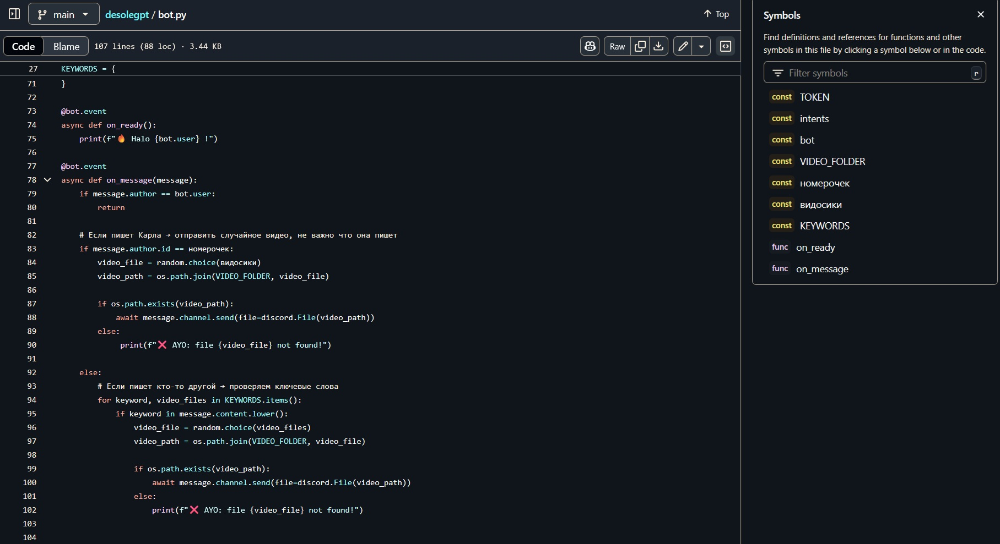
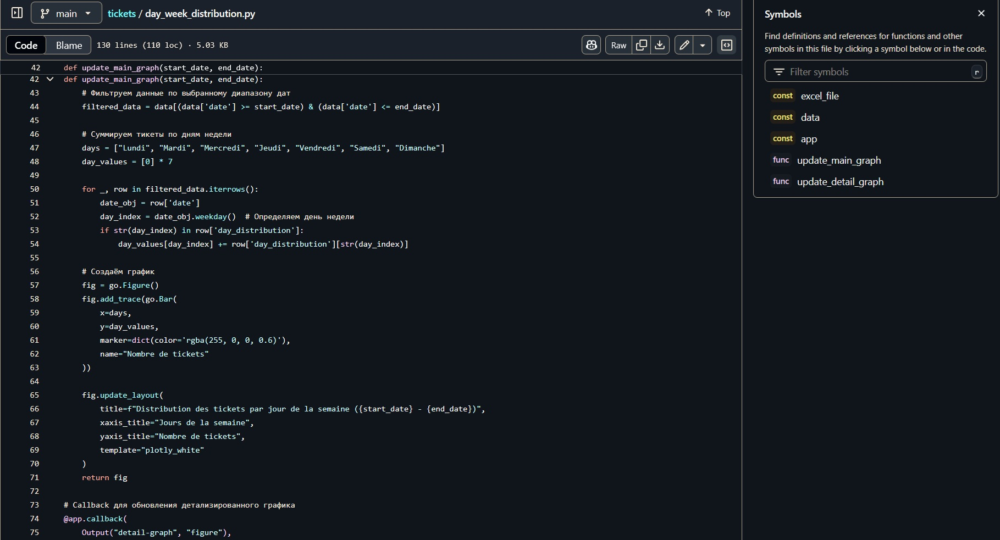

<!-- sections/projects.html -->
<h3>Mes projects</h3>
<div class="mouse-dragging">
    <sl-carousel pagination navigation slides-per-page="2" slides-per-move="1" style="--scroll-hint: 10%;--aspect-ratio: 3/2;">
        <sl-carousel-item>
            <sl-card class="card-image">
                
                DésoléGPT: Un bot discord qui réagit aux mots clefs et envoye des videos<br>
                <a href="https://github.com/Farounaga/desolegpt" target="_blank">voir sur GitHub</a>
            </sl-card>
        </sl-carousel-item>
        <sl-carousel-item>
            <sl-card class="card-image">
                
                Projet d'alternance: création des statistiques d'analyse de tickets<br>
                <a href="https://github.com/Farounaga/tickets" target="_blank">voir sur GitHub</a>
            </sl-card>
        </sl-carousel-item>
        <sl-carousel-item>
            <sl-card class="card-image">
                
                Ce site.<br>
                <a href="https://github.com/Farounaga/portfolio2" target="_blank">voir sur GitHub</a>
            </sl-card>
        </sl-carousel-item>
    </sl-carousel>
    <sl-divider></sl-divider>
</div>

<style>
    .card-image {
        
        height: 90%;
    }
</style>

<script>
function openFull(img) {
  if (img.requestFullscreen) {
    img.requestFullscreen();
  } else if (img.webkitRequestFullscreen) {       // Safari
    img.webkitRequestFullscreen();
  } else if (img.msRequestFullscreen) {             // IE11
    img.msRequestFullscreen();
  }
}
</script>